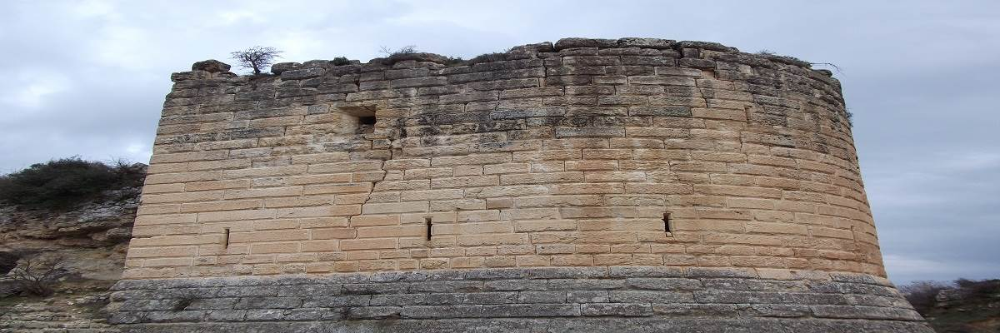

| Altınözü |
- Altınözü
- Tarihçe
- Coğrayfa
- Nüfus
- İklim
- Ekonomi
|
Ülke |
Türkiye |
| İl |
Hatay |
| Coğrafi Bölge |
Akdeniz |
| Yüzölçümü |
392 km2 |
| Rakım |
27 m |
| Posta Kodu |
31750 |
| İl Alan Kodu |
0326 |
| İl Plaka Kodu |
31 |
|  |
Altınözü adının Osmanlılar zamanında verildiği, o dönemde Fatikli Mahalle’sinde düzenlenen tapu kayıtlarından Altınözü isminin geçmesinden anlaşılmaktadır. Altınözü, Araplar tarafından alınmasından sonra kale tipi şato anlamına gelen Kasır diye anılmış ve zamanla bu kelime bozularak, halk arasında Kuseyr denilmeye başlanmıştır. İslâmiyetin yayılmasından sonra Altınözü’ ne hakim olan Kozkalesi, Hz. Ömer devrinde 638 yılında Araplar tarafından fethedilmiştir. Daha sonra Haçlıların eline geçmiş ve bu durum 150 yıl devam etmiştir. Ancak Memluk Sultanı Baybars daha sonraları Kuseyr (Altınözü) bölgesini ele geçirmiş ve bu bölgede 1515 yılına kadar hakimiyetini sürdürmüştür.
Osmanlı Sultanı Yavuz Sultan Selim Mısır seferi (1515) sırasında Kuseyr bölgesini Osmanlı’lara bağlamıştır. Bölgede altın madenleri olduğu için de kente Altınözü adı verilmiştir. II. Abdulhamit’in toprak reformu sırasında Altınözü Halep Vilayetine bağlanmıştır. 1. Dünya savaşı sonrasında Altınözü’ndeki milisler, Türkiye ile Fransa arasında imzalanan 1921 Ankara anlaşmasına kadar Fransızları 3 yıl süreyle Altınözü’ne sokmamıştır. Ancak Ankara antlaşmasından sonra Altınözü’ne giren Fransızlar, Hatay’ın Anavatana katılışına kadar ( 23 Temmuz 1939) milislerle uğraşmıştır. Hatay’ın Anavatana katılışı ile bu durum son bulmuştur. Hatay il ilan edildikten sonra Altınözü de ilçe olarak 1945 yılında Hatay’a bağlanarak 15 ilçeden biri olmuştur. Altınözü'nde günümüze ulaşan eserler arasında Koz Kalesi,Koz Kale Köyü yakınında olup, Kürşat Kalesi olarak da tanınmaktadır. Çevreye göre yüksek bir kayalık üzerindeki kale, kalınduvarlarla güçlendirilmiştir.Büyük bir bölümü harap olmakla beraber, güney tarafında 100 m. uzaklıkta iri blok taşlardan yapılmış burcu iyi durumdadır. helenistik dönemde yapılan bu kale Bizanslılar ve Haçlılar tarafından kullanılmış, 1268'de Baybars tarafından ele geçirilmiştir. Bunadan sonra da önemini yitirmiştir. Altınözü Yunushan Köyü'nün 3 km. batısında bir dağın eteğinde olan 20 m. uzunluğunda 12 m. genişliğindeki Sırtlan Mağarası; ilçe merkezine 8 km. uzaklıkta Yunuhsan Köyü yakınındaki Gelinler Dağı'nda MÖ.III. ve I. yüzyıllar arasında Roma ve Bizans dönemlerinde bir yerleşim yeri bulunuyordu. Burada yaşayanlar, kayalara oyulmuş evlerde yaşamlarını sürdürmüşlerdir. Ayrıca çevrede çok satıda katlı mezarlara da rastlanmıştır. Altınözü Tokaçlı Köyü'ndeki kalınrıların Melik-i Hileni'nin yazlık sarayı olduğu söylenmektedir. Burada yapılan kazılarda çok sayıda altın ve günlük kullanım eşyaları ile karşılaşılmıştır. Altınözü ile Koz Kalesi arasında rastlanılan kalıntıların ne olduğu anlaşılamamakla beraber, burada yapılan kaçak kazılarda altın gümüş ve tarihi esere rastlanmıştır. |
İlçemiz Hatay ilinin güneyinde 36.enlem ile 36.boylamın kesiştiği noktadadır. Suriye ile sınır olan ilçemizin yüzölçümü 357 km.dir. Rakımı ise 325 m.dir. İlçemizin yüzölçümü 357 km2.dir. Rakımı ise, 325’tir. İlçemiz Antakya’ya 22 km mesafededir. Doğusunda ve güneyinde Suriye devleti, kuzeyinde ve batısında Antakya, güney batısında Yayladağı ilçesi sınır teşkil etmektedir. Suriye ile ilçemizin sınır uzunluğu 75 km dir, bunun 50 km’sini Asi Nehri oluşturmaktadır.
|
|
| İlçemizin nüfusu 61.341 dir. 48 Mahalleden Oluşmaktadır. İlçe merkezi Fatikli, Yenişehir ve Sarılar Mahallesi olmak üzere 3 mahalleden oluşmaktadır. |
Yıl |
Toplam |
Şehir |
Kır
|
2014 |
61.341 |
61.341 |
veri yok |
2013 |
61.882 |
61.882 |
veri yok |
2012 |
59.169 |
7.399 |
51.770 |
2011 |
60.198 |
7.379 |
52.819 |
2010 |
60.591 |
7.199 |
53.392 |
2009 |
62.256 |
7.458 |
54.798 |
2008 |
63.117 |
7.428 |
55.689 |
2007 |
61.323 |
8.171 |
53.152 |
2000 |
59.167 |
5.352 |
53.815 |
1990 |
58.288 |
6.518 |
51.770 |
1985 |
53.304 |
5.792 |
47.512 |
1980 |
43.418 |
4.692 |
38.726 |
1975 |
45.577 |
5.158 |
40.419 |
1970 |
44.340 |
4.642 |
39.698 |
1965 |
32.835 |
3.312 |
29.523 |
|
| Sıcak ve ılıman bir iklim hakimdir; Altınözü Kış aylarında yaz aylarından çok daha fazla yağış düşmektedir. Köppen-Geiger iklim sınıflandırmasına göre Csa olarak adlandırılabilir. Altınözü ilinin yıllık ortalama sıcaklığı 18.1'dır. Yıllık ortalama yağış miktarı: 899 mm |
İKLİM GRAFİĞİ

|
| 2 mm yağışla Temmuz yılın en kurak ayıdır. Ortalama 169 yağış miktarıyla en fazla yağış Ocak ayında görülmektedir. |
SICAKLIK GRAFİĞİ
|
27.9 sıcaklıkla Ağustos yılın en sıcak ayıdır. Ocak ayında ortalama sıcaklık 7.7 olup yılın en düşük ortalamasıdır. |
|
İlçe nüfusunun % 90’ı tarımsal faaliyetlerle, %10’u ise küçük çaptaki el sanatları ile uğraşmaktadır. İlçe halkının belli başlı gelir kaynağı zeytin, buğday ve tütün ürünlerine dayanmaktadır. Vatandaşların yoğun olarak yaşadığı kırsal kesimde gelir seviyesi düşük olduğundan halkın büyük bölümü Çukurova ve Amik ovalarına mevsimlik tarım işçisi olarak çalışmaya gitmekte olup, bir kısmı da yurt dışında çalışmaktadır. İlçemizin toplam yüzölçümü 357.000 dekar olup, 301.160 dekarlık bölümü tarım yapmaya müsait arazilerdir. Tarım yapmaya müsait alanların 30.430 dekarlık bölümü Yârseli Baraj Gölünden, Asi Nehrinden, Yârseli Barajını besleyen Kuseyri Çayından ve çiftçilerimizin açtığı kuyulardan sulanmaktadır. Zeytincilik bölgesi olan İlçemizde 3.645.490 adet zeytin ağacı bulunmaktadır. Elde edilen tane zeytinler, İlçemize bağlı mahallelerde mevcut 40 adet zeytinyağı fabrikasında işlenmektedir. 1 adet zeytinyağı dolum tesisi ve 1 adet zeytin salamura tesisi bulunmaktadır. Yıllık ortalama 11.000 Ton zeytin yağı üretilmektedir.
|
|

|

|
|
|